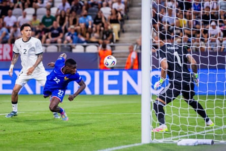

T he vast scale of the overhaul required at Everton this summer had David Moyes worried. The start of pre-season has indicated why. The squad that reported on Sunday for a training camp in St Andrews contained 15 senior players in its ranks and numerous holes to fill. Progress is being made behind the scenes to repair the damage of the Farhad Moshiri years, but there is no easy fix.
Everton’s senior contingent will rise to 16 now that Idrissa Gueye has followed Michael Keane in signing a new contract, a week after becoming a free agent. Pep Guardiola, meanwhile, laments having 32 senior players on the books at Manchester City and could afford to omit Jack Grealish from his 27-man squad for the Club World Cup. There is no level playing field in the Premier League.
Everton’s squad in Scotland includes the 21-year-old striker Youssef Chermiti and the 22-year-old midfielder Tim Iroegbunam, who have started a combined seven Premier League games for the club Another two, the first-choice centre-backs James Tarkowski and Jarrad Branthwaite, are working their way back to fitness after sustaining serious hamstring injuries at the end of last season.
In terms of players with Premier League experience, Moyes has one goalkeeper (Jordan Pickford), three full-backs (Séamus Coleman, Nathan Patterson and Vitaliy Mykolenko), four central defenders (Tarkowski, Branthwaite, Keane and Jake O’Brien), three central midfielders (Gueye, Iroegbunam and James Garner), one attacking midfielder (Carlos Alcaraz), two wide men (Dwight McNeil and Iliman Ndiaye) and two forwards (Chermiti and Beto). Only central defence has the numbers required for a Premier League campaign. From an academy that has lost many promising talents in recent years because of financial problems higher up the chain, only the 18-year-old midfielder Harrison Armstrong appears in a position to press his first-team claims.
Alcaraz is Everton’s one signing of the summer transfer window, for an attractive price of £12.6m, having impressed while on loan from Flamengo last season. The club is edging closer to a second in the form of the Villarreal striker Thierno Barry after making a breakthrough in discussions on an initial £27.5m fee for the 6ft 5in France Under-21 international last week.
Everton hope to secure the signature of France Under-21 striker Thierno Barry (centre).Photograph: Branislav Racko/AFP/Getty Images
The to-do list will remain extensive, even if the Barry deal gets over the line. Moyes wants more options and quality out wide, in central midfield and at right-back. He needs cover for Pickford and competition for Mykolenko at left-back. There is money available thanks to new owners, The Friedkin Group, and the easing – but not the eradication – of Premier League profitability and sustainability rule pressures, though not enough to address every flaw. The loan market and free agents will have to be used once again.
Before the final game of last season, an away win at Newcastle , Moyes was asked whether he was worried about the extent of the rebuild required. “Yes I am,” he said. “I don’t think it’s something you’d have ideally as any manager, such a big changeover. I knew we had this situation when I came into the job. There is a chance for big change but it’s easier said than done. You want to build layer after layer. We have five loan players. Most clubs have one or at worst two. That alone gives you an idea.”
Four of those five loanees – Orel Mangala, Jesper Lindstrøm, Jack Harrison and Armando Broja – have since returned to their parent clubs, while Dominic Calvert-Lewin, Abdoulaye Doucouré, Ashley Young, João Virgínia, Asmir Begovic, Neal Maupay and Mason Holgate have left after the expiry of their contracts. Only Maupay brought in a fee, £3.4m from Marseille. Eleven out and one in. The necessary short-termism and cut-price deals that characterised the final years of Moshiri’s reign, as Everton sought to avoid further punishment from the Premier League, have inevitably caught up with the club.
The man largely responsible for navigating that minefield, Kevin Thelwell, left his role as Everton’s director of football this summer after TFG decided to change the club’s leadership structure. The former head of recruitment Dan Purdy has followed Thelwell to Rangers. Everton now have a football leadership team instead of a director of football model, with Moyes having significant input alongside the new chief executive, Angus Kinnear.
TFG’s and Kinnear’s recruitment is encouraging. They have appointed the former Manchester United academy director Nick Cox as technical director. He is responsible for ensuring all aspects at Finch Farm training ground – medical, operations, facilities and player care – are at an elite level, including for the women’s team and academy.
Nick Hammond, a former director of football at Reading, head of football operations at Celtic and transfer consultant at Leeds and Newcastle, now leads Everton’s player trading and Chris Howarth heads the club’s football strategy and analytics operations. As part of Howarth’s arrival, TFG acquired his Insight Sport data consultancy. Everton have also recruited James Smith, director of scouting and recruitment at the City Football Group, to become their new director of scouting and recruitment, although he does not start until September.
The overhaul at the top will need time to bring the change required at playing level, but as the new five-year contract for Branthwaite demonstrates progress is being made to build on the recovery Moyes instigated last season. The Scot believes change should be incremental. That is not an option this summer.